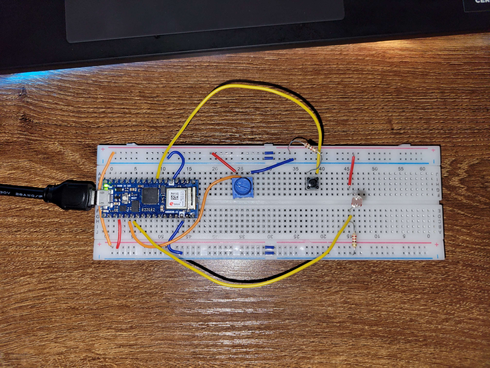
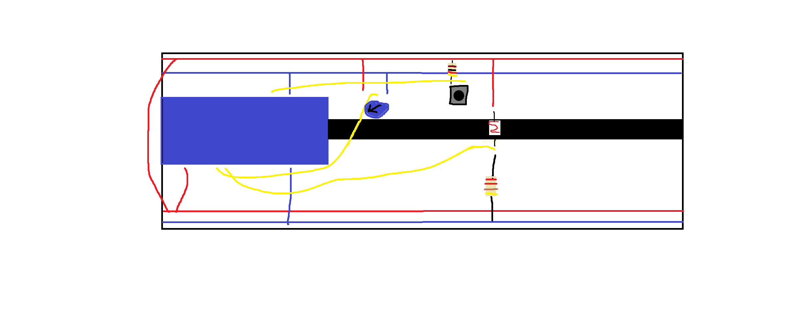

Sliding Objects Controller
A project for serial communication between Arduino and Unity
For my second project in physical computing, I wanted to create a small game in Unity that can be controlled through serial communication with an Arduino. I decided to create a device that sends three integers to Unity for interpretation. This would allow me to control the game with three different forms of input. To make this project, the documentation for my Arduino Nano 33 Iot was very useful in configuring my controls. I ran into a many difficulties when creating this project.

The board has three controls. The first control is a dial. This dial controls the direction of the wind in the game. The wind direction is based on the view of the camera when the user is looking at the board while the Arduino is on the left. This value is sent to the Serial port as an integer between 0 and 1023, representing the angle. The second control is a button that turns on the wind in the game. The wind adds a continuous velocity based on a specified speed in the editor. The final control is a photosensor that controls a few individual lights in the scene. The arduino writes the photosensor value to the serial port.

The first issue that I ran into when designing this project was determing how I would communicate between Unity and Arduino. To do this, I referenced this post for information. Once I got serial communication working, I noticed that the interval for communication was very slow in Unity. This was giving me issues with interpreting my values responsively. I fixed that issue with the help of this post. Finally, I used this post to get some code for the translation of an angle to a direction.
I am very happy with how the project turned out. I was able to create a responsive, reactive, and interactive system that utilizes serial communication. This project has piqued my interest in serial communication with unity. I intend to further this project a bit further to make it more like a game, but for now, it is quite acceptable. My code for the board can be downloaded here.